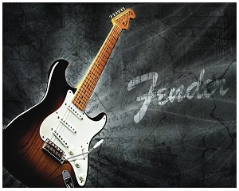
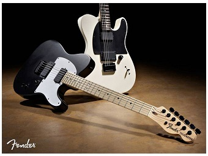

FENDER
МЕНЮ
FENDER
Описание
Эти гитары славятся качеством и долгожитеем. Довольно редко ломаются. Они лучше всего подходят под песни играющиеся боем. Перебор же звучит не так четко как например на les Paul. Стоит отметить что «дистрошн» на этих гитарах получается довольно не плохой, «мясистый». Стандартная форма корпуса — стратокастер. Удобна, легка и практична. Так как используется именно такая форма чаще всего 5 — позиционный переключатель находится под рукой, что позволяет быстро перейти от «дистрошн» например к «лайт» или наоборот. Это позволяет создавать интересную мелодию. Многие музыканты играли именно на fender.
В целом: 
Качество сборки–5
Качество звука–5/4(бой/перебор)
Удобность корпуса–4+
Держание строя–5
Вес–5Общая оценка